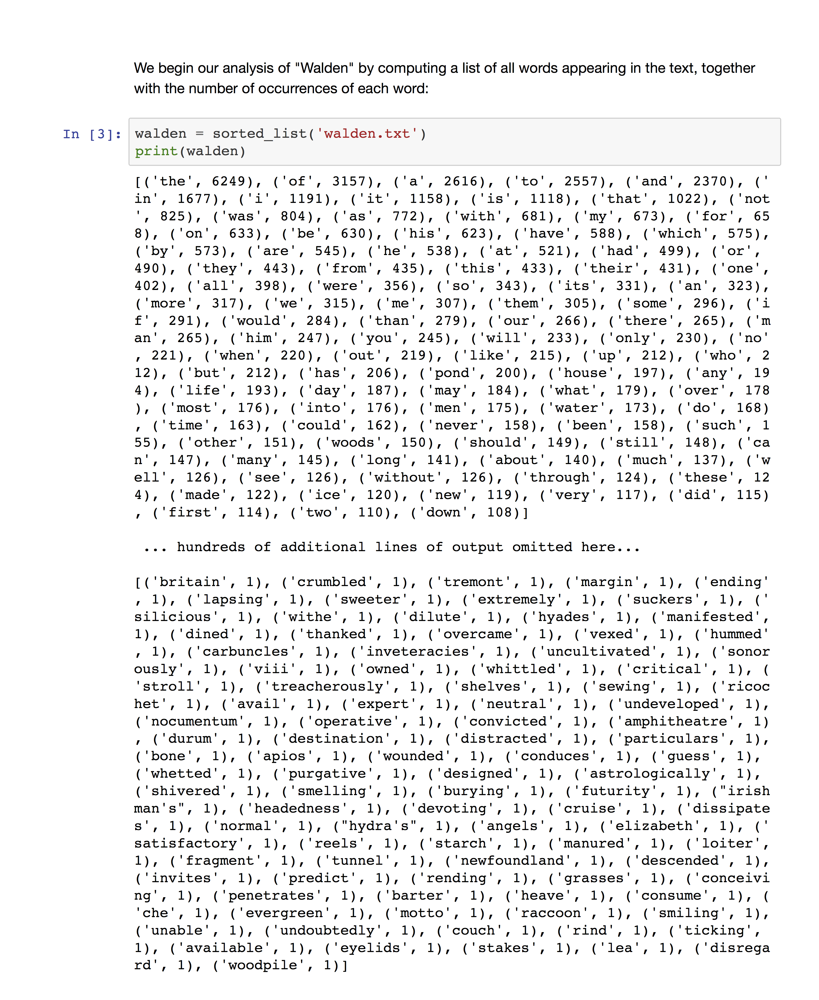
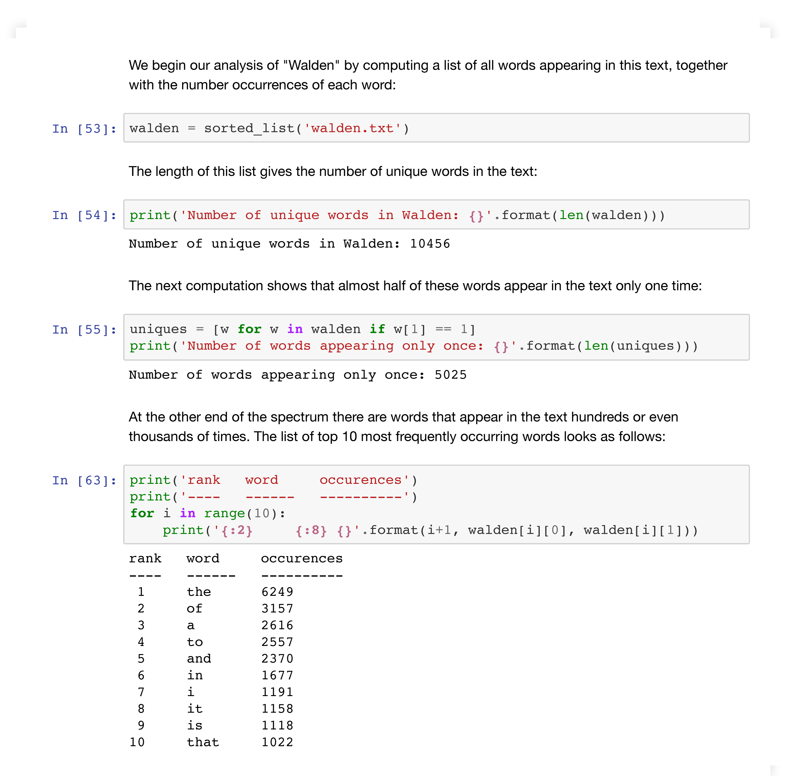

Example: Output size¶
Bad: In the report sample below the very long printout obscures the report and serves no purpose, since no one will read it in its entirety:
Good: The example below starts with a computation of the same list as above, but this list is never printed. Instead, it is analyzed to obtain interesting data.
